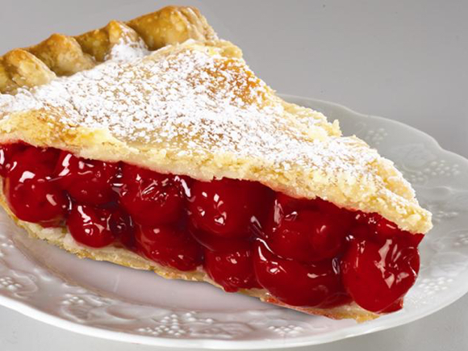

Mock Town Cherry Pie

Description
Welcome to our cherry pie paradise! Dive into a world of flaky crusts, sweet cherries, and that perfect
cherry pie moment that even Luffy from One Piece would trade his Gomu Gomu powers for. Join us on this culinary adventure
and learn to create the most scrumptious cherry pies that will have you saying, 'Cherry-tale a bite!
Ingredients:
- 60g weak flour
- 60 strong flour
- 80g salted butter
- 10g milk
- 1/2 egg
- 15 granulated sugar
- Custard cream
- 2 egg yolks
- 10g corn starch
- 2 tbsp lemon juice
- 20g salted butter
- 16 American cherries
Steps:
- First, make the dough. Mix the flour together and sift. Cut butter into 1cm blocks. Chill both
flour mixture and butter in the fridge. Mix milk, eggs, and sugar well, then chill in fridge.
- Add the butter to the bowl with the flour chop-mix with a pastry cutter. Pour in egg mixture and mix together with a spatula.
- Wrap in plastic wrap or parchment paper, and refrigerate 30 minutes to 1 hour.
- Remove dough from refrigerator. Place parchment paper on top of dough, and spread to proper size to fit in a pie pan with a rolling pin
- Place the dough in the pie dish, making sure that it is tightly against the bottom and pressed into the corners.
- Use a floured fork and press along the walls of the pie dish (C). Any dough sticking out over the edge should be cut off.
- Using a fork, open 10 holes in the bottom. Cover with parchment paper and fill with weight stones
- Preheat oven to 200°C. Cook 15 minutes. Remove stones, reduce heat to 180°C and cook an additional 15 minutes. Cool on a cake rack.
- In a pot, add egg yolk, sugar, cornstarch, weak flour, milk and mix. Turn on stove. Mix until thickened
- Remove from heat. Add butter and lemon juice, and mix until smooth. After cooled, pour into pie dish.
- Remove cherry stems and cut cherries in half, remove seeds. Place on top of the custard cream and chill in the refrigerator.
Enjoy!!